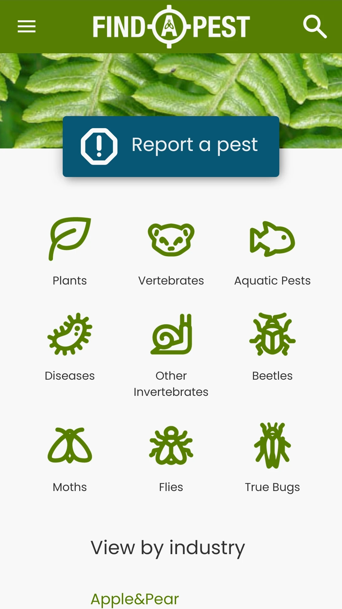
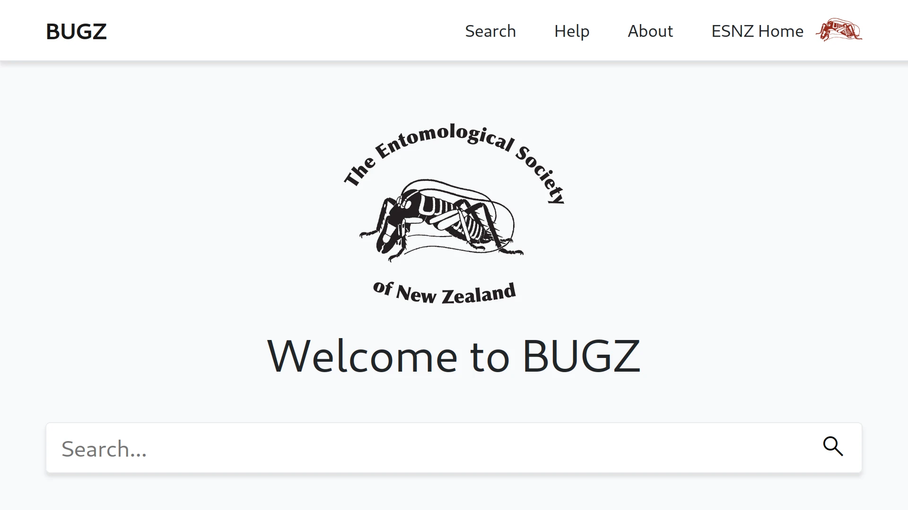
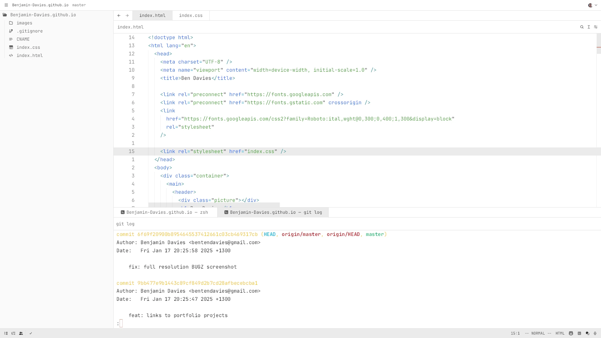
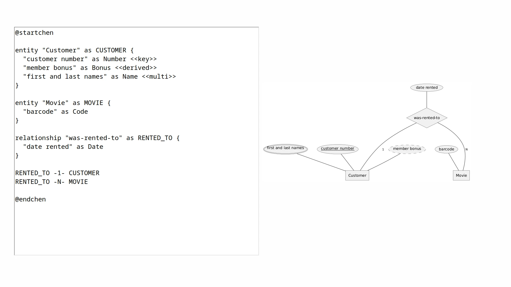

I am a Software Engineering student who is curious, principled, loves
problem solving and has an eye for detail. My skills extend far beyond
the classroom. I have years of experience building full-stack
applications and have made significant contributions to open source.
Outside of work I am intrigued by a variety of things – from
computers and mathematics to music and phonology. I am studious and
find a deep satisfaction in seeing a job well done.

Find-A-Pest
for the University of Canterbury
Cloud infrastructure migration using
CouchbasePostgresKubernetesAWS

BUGZ
for the University of Canterbury
Rewrite with modern technologies using
C#AngularPostgresDigitalOcean

Zed Editor
for Open Source
Various Vim mode commands and a color-theme remix using
Rust

PlantUML
for Open Source
Support for Chen entity-relationship diagrams using
Java
I've also worked on projects using Proxmox VE, Openflow (for Allied
Telesis Labs), Android and Java's C++ FFI (JNI, for the University of
Canterbury). However, they were for internal R&D so I opted not to post
them here.